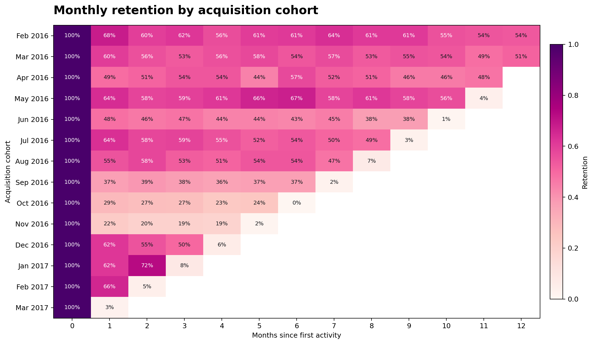
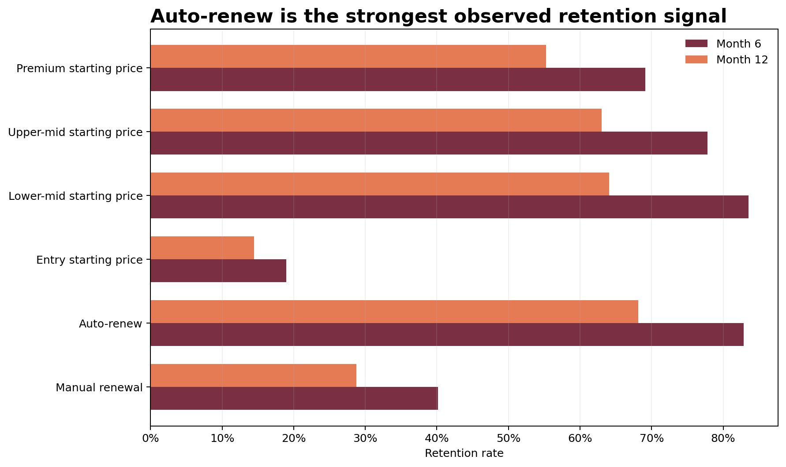

Business question
Where does retention weaken?
Subscription growth is only durable when customers continue paying after acquisition. This project measures monthly repeat activity, compares acquisition cohorts, and tests whether auto-renew and starting price relate to longer customer lifetimes.
Approach
- Standardized transaction and subscription dates.
- Collapsed duplicate activity to one customer-month record.
- Assigned each customer to their first active month.
- Calculated month-index retention for the first 12 months.
- Compared retention by initial auto-renew status and price band.
Retention curve
The steepest loss happens early.

Cohort view
Newer cohorts repeat the same early drop.

Key findings
Retention is an onboarding problem first.
Auto-renew is the clearest lever
Customers starting on auto-renew show a 42.7-point advantage at month 6. This is an association, not proof of causation, but it is large enough to prioritize in experiments.
Value compounds with longevity
The median retained subscriber contributes 6.2× the observed revenue of a subscriber who leaves before month 6.

Segment table
Retention drivers at a glance.
| Segment | Customers | 6M retention | 12M retention |
|---|---|---|---|
| Manual renewal | 2,404 | 40.2% | 28.8% |
| Auto-renew | 2,595 | 82.9% | 68.1% |
| Entry starting price | 1,250 | 19.0% | 14.5% |
| Lower-mid starting price | 1,250 | 83.5% | 64.1% |
| Upper-mid starting price | 1,249 | 77.8% | 63.0% |
| Premium starting price | 1,250 | 69.1% | 55.3% |
Recommendations
Turn retention insight into product action.
01 · Improve first 90 days
Trigger onboarding nudges, setup checklists, and success milestones before the early retention curve flattens.
02 · Test auto-renew prompts
Offer a transparent auto-renew default or incentive, then measure incremental retention with a randomized test.
03 · Watch cohorts monthly
Make the heatmap a recurring operating metric and annotate product, pricing, and lifecycle-message changes.
Dataset and limitations
Source: Microsoft Learn customer analytics sample data, downloaded July 21, 2026. The file is a demonstration dataset rather than audited production records. Monthly activity is treated as retention; gaps can represent pauses, delayed billing, or data-generation behavior. Auto-renew findings are observational and should be validated experimentally.